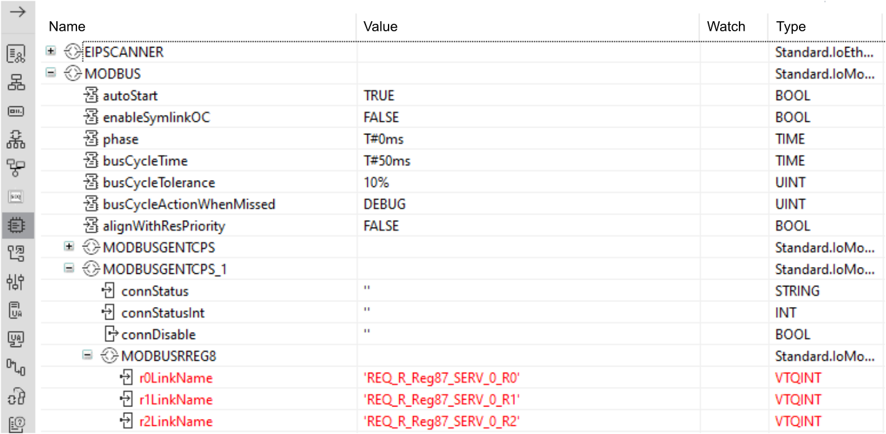
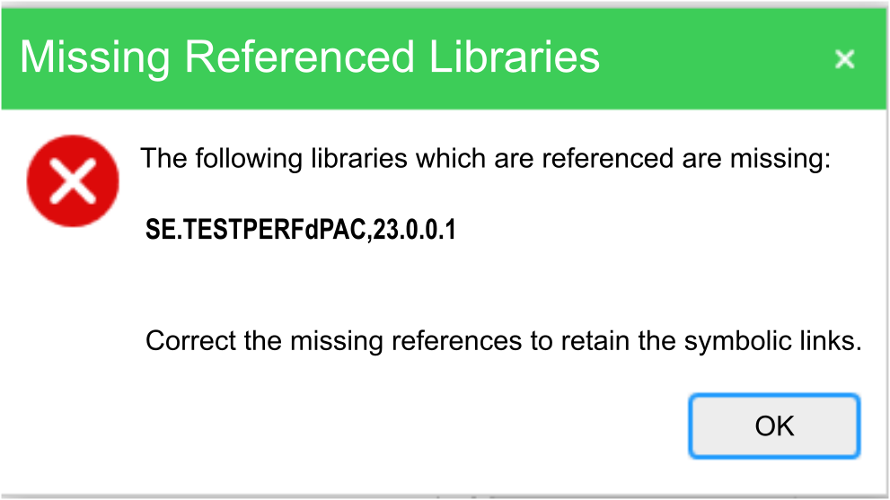
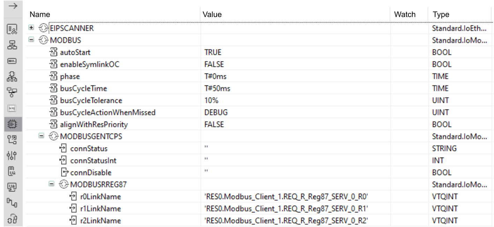

The power meters, available in the device catalog of the Physical devices editor of EcoStruxure Automation Expert, does not support the following services:
Discovery service
Locate service
Get Identity service
IP settings configuration
Web server configuration
When the Display Alias Name Toggle Button checkbox is selected, the asset tag names configured in the CAT instances are displayed, if the CAT_HMI Symbol is configured with Asset Tag Label or Asset Tag Text.
Although dPACs support up to 128 EtherNet/IP devices, managing more than 32 EtherNet/IP devices per dPAC significantly reduces the performance of EcoStruxure Automation Expert - Buildtime.
It is not possible to export the Ethernet/IP devices contained in your hardware CAT configuration (HWConfig).
If you import a HWConfig file, exported from an earlier version of EcoStruxure Automation Expert, the Ethernet/IP devices contained in the file, are imported with the rest of the configuration.
Forcing values or blocking events is possible from both EcoStruxure Automation Expert and EcoStruxure Automation Expert - HMI. When values are forced or events are blocked, they remain in the devices even after the user logs out, closes EcoStruxure Automation Expert or EcoStruxure Automation Expert - HMI, or if the communication between EcoStruxure Automation Expert or EcoStruxure Automation Expert - HMI and the devices is lost. As well, if some values are forced in EcoStruxure Automation Expert, they apply immediately to a rebooted device.
Generic function blocks might be displayed as obsolete sometimes, even though the library contains the correct reference to the function block type. However, these function blocks are deployed correctly.
Clicking on shortcuts to help in the ribbon bar or hitting F1 key will open the local help. This documentation is installed locally on your computer. It contains hyperlinks such as HowTo videos or external links that might not open when you click on them.
If this occurs:
right-click the link, select copy path, then open your favorite Internet browser and paste the link into the address bar to access the videos or resources.
Or open the same document on https://product-help.se.com/EcoStruxure Automation Expert/24.1
POU objects are no longer supported. If you open a project created with earlier versions of EcoStruxure Automation Expert that includes defined POU objects, you cannot view, edit or remove them nor create new ones.
Function objects supports only Structure Text language. CFC and LD languages are no longer supported. If you open a project created with earlier versions of EcoStruxure Automation Expert that includes defined Function objects using CFC or LD languages, you cannot view, edit or remove them nor create new ones.
If you need Remapping a logical device to a physical device with a different IP address, requires to run the following commands on every device connected to the logical device thought Cross Communication:
Compile for Online change
Deploy→Online change
Before migrating any application built with an older version of EcoStruxure Automation Expert, For each missing library: 24.1, you must ensure that all libraries referenced in the initial application are available on the computer.
During the migration if any referenced library is missing the migration will not take place and the Symlinks may not work properly and do appear in red color and/or as a broken Symlink.
Example for the associated Symlinks in the HW Configurator, when the migration is not successful:

A message box will tell you which references are missing:


Take a note about all listed libraries in the message box including their version.
Close the message box and the solution without saving.
For each missing library:
Get the library installation package.
Install the library.
Open the solution anew with EcoStruxure Automation Expert 24.1.
For each library with mismatched version:
Remove the references to remaining missing libraries, typically if they are not used anymore, or
Update the reference of the library to a newer version you have already installed on your computer.
The solution will be reopened automatically.
Result: Once the solution is reopened and rebuilt the Symlinks are migrated and can be used as usual.
Same example once the missing librarires have been resolved and the solution is migrated:
The RetransmitTime data input to MQTT_CONNECTION has been removed. The system default device property for this input, Communication.MQTTClient.RetransmitTime has also been removed.
In the user manual sub sections under Install and Configure ASP Remote Galaxy Setup, wherever AVEVA System Platform 2024 is mentioned, is replaced by AVEVA System Platform.